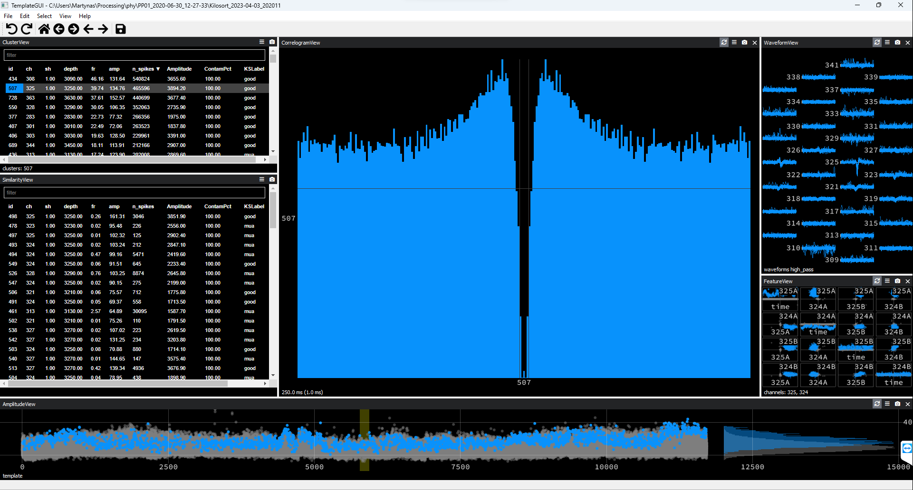

Spikesorting Instructions#
Important cosiderations before doing any spikesorting#
Spikesorting involves two steps. During the first step you do the automatic spikesorting using Kilosort. During the second step you inspect the Kilosort output using Phy and make further adjustments to it. The latter part is refered to as the manual curation. Each of these steps transform the original data in many ways, often distorting it. You have to take precaution to inspect your data and seek to ensure that your data is minimally distorted/degraded by the spikesorting process.
In our experience, Kilosort1 works well with multi-channel high density recording probes like Neuronexus and Neuropixels. We have also used later versions of Kilosort with good results. However, there is one critical caveat to take into account when using later versions of Kilosort. Later Kilosort versions appear to reduce the overall waveform amplitude of spike clusters and reduce the number of recording channels that cluster waveforms are visible on. This might be due to any/multiple data transformations applied by Kilosort during its data preprocessing stage, like common average referencing, filtering, channel whitening, and drift correction. Whatever the cause of this issue, the way to sidestep this problem is to extract cluster waveforms directly from the raw recording traces manually for your subsequent data analyses.
We recommend using the latest Kilosort version (which is 3 at the time of writing this documentation) with drift correction enabled. You can use the default settings set by the KilosortWrapper. If you do not like the Kilosort output that you are getting, you can try various Kilosort set-ups and then inspecting the output yourself in Phy by comparing the output produced using different set-ups.
Reading these instructions is only an important first step. After reading, you should observe an experienced extracellular electrophysiologist performing the real spikesorting, explaining you every step they take. Then attempt doing it yourself and show your work to a senior lab member. Do not expect to get it right straight away, but with practice and experience you will master the skill.
Run Kilosort#
Before you can do any manual spikesorting, you need to complete the automatic spikesorting part using Kilosort. Open Matlab and navigate to the folder containing raw extracellular electrophysiology data recorded using Neuropixels or any other probe. Run KilosortWrapper from that folder. You can, for example, use a similar script to the one shown below:
algorithm='ks3';
driftCorrection = true;
basepath = cd;
[~, basename] = fileparts(basepath);
GPU_id = 1;
procPath = '';
createSubdirectory = true;
performAutoCluster = true;
config = '';
phyPath = 'C:\Users\Martynas\Python_environments\phy';
acqBoard = 'OpenEphys';
probe = 'Neuropixels1_checkerboard';
savepath = KiloSortWrapper(basepath=basepath, basename=basename, ...
GPU_id=GPU_id, procPath=procPath, createSubdirectory=createSubdirectory, ...
performAutoCluster=performAutoCluster, config=config, phyPath=phyPath, ...
acqBoard=acqBoard, probe=probe);
For more details on how to run KilosortWrapper type in Matlab console one of the following:
help KilosortWrapper
doc KilosortWrapper
If you set createSubdirectory = true;, Kilosort should produce a separate output folder inside the raw data folder. This is where you need to navigate using your terminal before launching Phy, as explained in the next subsection.
If you want to adjust Kilosort parameters, you can edit KilosortConfiguration.m file. You can also create a copy of this file, edit it, and move it to ./ConfigurationFiles folder. In this case you would need to provide the path to the file using config parameter, for example:
config = '<KilosrtWrapper-path>/ConfigurationFiles/<config-file-name>.m';
Launch Phy#
Open Power Shell and type in:
cd <kilosort-output-folder>
.<path-where-you-installed-phy-environment>\phy\Scripts\activate.ps1
phy template-gui params.py
A successful launch of Phy GUI indicates that your spikesorting environment is set up and ready for manual curation of the Kilosort output.
Major Manual Spikesorting Steps Using Phy#
Step 1: Configure Phy displays
Step 2:
Step 3: Mark multiunit activity (MUAs)
Once you set up your Phy interface and are ready to start spikesorting, you would typically go through the spikesorting data twice in two major phases. During the first phase you would mark noise clusters, attempt to merge and/or split clusters, and mark so-called ‘good’ clusters or units. In the second sift though the data you would mark the remaining unclassified clusters as MUAs.
Danger
Do not lose your work!
Save your spikesorting progress periodically often. Phy may crash unexpectedly and all unsaved work would be lost. There is no autosave functionality in Phy. The shortcut for saving is Ctrl+s.
Configure Phy Display#
Configure your Phy display to include the below windows:
ClusterView: Sort clusters based on their peak recording channel in increasing order.
SimilarityView
AmplitudeView
CorrelogramView: Adjust window size to be 500 ms (250 ms when doing cluster comparisons). Set bin size to 0.5 milliseconds.
WaveformView: Make sure that at least 32 recording channels are displayed. Single waveform duration on a single channel is 83 data points or approximately 2.77 ms.
FeatureView
One way you could organise them is shown in the figure below.
{kind=link}
Figure 1. Recommended Phy Display Arrangement
This is just an example. The size of individual displays may be adjusted according to your preference or the your spikesorting stage.
Mark Noise Clusters#
There are only three categories of clusters: ‘good’ (unit), multiunit activity (MUA), and noise. Initially, Kilosort classifies all data into units and MUA’s. This classification should be largely ignored. You should reclassify clusters and should also mark noise clusters as such (Kilosort does not mark noise). You mark a cluster as noise by selecting it in the ClusterView and pressing Alt+n keyboard shortcut.
Here are a few criteria for recognising putative noise clusers:
Cluster autocorrelogram has a triangular shape and waveforms appear uniform across recording channels as in the example below.
{kind=link}
Figure 2. Noise Cluster Example #1
Waveforms appear on all recording channels.
{kind=link}
Figure 3. Noise Cluster Example #2
Waveform appearing on a single recording channel only.
{kind=link}
Figure 4. Noise Cluster Example #3
Waveform appearing on a single recording channel only and having a distinctly unusual non-spike-like shape.
{kind=link}
Figure 5. Noise Cluster Example #4
Unit spiking on channel 64 mixed with noise appearing on multiple channels. Splitting is not possible. Therefore, this cluster should be marked as noise.
{kind=link}
Figure 6. Noise Cluster Example #5
Activity apearing on all recording channels albeit with varying amplitude. Autocorrelogram shows strong periodicity.
{kind=link}
Figure 7. Noise Cluster Example #6
Activity waveform does not resemble a typical spike waveform.
{kind=link}
Figure 8. Noise Cluster Example #7
These are not exhaustive examples. You will come across many more. With practice you will learn to distinguish between biologically plausible waveforms and noise events and will learn to spot telltale signs of noise.
Merge Clusters#
You should ideally be merging clusters as part of the spikesorting Step 2. When you go through clusters one by one, if you think that a particular cluster could be a so-called ‘good’ cluster (unit), you should check wheter the cluster can be merged with any other cluster prior to classifying the cluster. Press spacebar to select the next most similar cluster in the SimilarityView. Only ‘good’ (clusters appearing in green colour) or ‘unsorted’ (clusters appearing in white) clusters can be selected automatically. MUAs (clusters in light grey) and noise (clusters in dark grey) are ignored by default and can only be selected manually. This is the reason why you should not mark clusters as MUAs until the very end of the spikesorting process.
Below are the criteria to consider when merging clusters:
The spike waveforms of the clusters being compared should be very similar and appear on the same recording channels. An exception is the apearance of spikes or noise on additional recording channels. This happens when a cluster is split into subclusters because some spikes coincide with appearance of neighbouring cluster spikes or periods of noise. Moreover, some leeway should be given to account for the electrode drift: Some cluster waveforms may differ in amplitude and their channel span somewhat due to anatomical drift over time and, hence, should really be merged.
The cross-correlograms should have clean refractory periods. However, if the spike waveforms are identical but the cross-correlogram refractory periods are still contaminated these clusters might be merged. Then they should be attempted to be split based on the criteria outlined in Split Clusters subsection or should be kept merged and the resultant cluster re-classified as ‘unsorted’.
The two clusters should overlap or appear adjacent to each other in the principal component space of the FeatureView window. The merged cluster should then form a single cloud cluster in the principal component space.
Amplitudes of the two clusters should overlap or form continuous grouping over time in the AmplitudeView window. This is not a strict requirement as amplitudes of the two clusters may differ due to a drift or burst firing.
You merge clusters by pressing g. You do this repeatedly until the cluster of interest can no longer be merged. The meged cluster should also be considered for splitting.
Split Clusters#
You should ideally be splitting clusters as part of the spikesorting Step 2. Splitting does not necessarily always have to be preceded by merging, as well as merging does not always have to be followed by splitting. Splitting should be attempted in certain circumstances when you think that a cluster can potentially be cleaned up (improved upon). These cases would typically involve ‘good’ units with slightly contaminated refractory periods or MUAs that have a visible dip coinciding with the refractory period. You may attempt to clean up the refractory periods of these ‘dirty’ units and MUAs.
These are the splitting steps you should attempt on these clusters:
Visualise spikes in the refractory period: go to
Edit >> VisualizeShortISIin the Phy menu (orAlt+ikeyboard shortcut). This action will split spikes with the short inter-spike interval (ISI) from the rest of the cluster. If the short ISI spikes contain only noise, they should be discarded as noise. If they contain units, they cannot be split apart and should be re-merged with the rest of the cluster they came from. On criteria for deciding when clusters should be merged or kept seprate, see the Merge Clusters subsection.Inspect the FeatureView window. If you see that the cluster does not have a spherical cloud shape, this may indicate that multiple clusters were merged together. Try to separate such a cluster by drawing lines around part of the cluster (
Ctrl+left-click) and pressingkto split. If you think that the two resultant clusters do not belong together, keep them separated. Otherwise, re-merge them.Inspect the AmplitudeView window for unusual groupings of spikes. Try to split those apart by drawing lines around these groupings (
Ctrl+left-click) and pressingkto split. These clusters may contain noise or other clusters of spikes that should be kept separate. If the resultant clusters are similar, they should be re-merged back.Try splitting off outlying large amplitude spikes clearly deviating away from the median amplitude in the AmplitudeView window. These large amplitude events may be noise. However, merge them back, if they are too similar to the main cluster spikes.
You can draw a close line around the cloud cluster in the FeatureView window and split away any outliers. These outliers may be noise or spikes from other clusters that were merged by mistake. Discard them as noise or multiunit activity accordingly. However, you must re-merge them if these split-off spikes are similar to the spikes in the main cluster.
Finally, you can recluster a particular cluster of interest using
Edit >> Recluster PCAsaction (Alt+K). The resulting new clusters may be significantly different from each other warranting being split into seprarate clusters. They may be different units or one of the culsters may contain noise. If the new clusers do not look significantly different, merge them back together.
Mark Units#
When deciding between single unit (‘good’ unit; Alt+g) and multiunit activity (Alt+m), look for a few features:
The refractory period in the autocorrelogram should not be contaminated with spikes. This is the most important criterion. It is reasonable to expect some minor contamination, but the refractory period should be reasonably clean (no higher than 20% level of the autocorrelogram ‘shoulders’). It may be possible to clean up the refractory period by splitting the cluster and, thus, splitting should always be considered. If the cluster cannot be cleaned up, it should be marked as unsorted (
Alt+u).The spike waveform should have a distinct shape characteristic of action potentials. It should be clean, meaning that local field potential deflections should be aligned and clearly visible on the peak channel, multiple nearby waveforms should not be present on the peak channel, and waveforms should not be contaminated by noise. This is the second key criterion.
‘Good’ units should have a relatively high firing rate. There is no strict threshold; however the firing rate criterion is important. If a unit has a low firing rate, its autocorrelogram is often meaningless. If you have an empty autocorrelogram, you cannot say anything about the activity during the refractory period: There are simply not enough spikes to even assess for it. However, you should always consider such clusters for merger. If they cannot be merged, they should be discarded (marked as unsorted).
Unit activity should appear clusterred in an eliptical manner in the principal component space shown in the FeatureView window. Violations of this requirement may indicate the presence of merged subclusters that should be split, if possible.
Unit amplitudes should ideally remain stable throughout the recording session. This is not a strict requirement as bursting units are likely to have multiple amplitudes. Amplitude may also change over the period of the recording due to the probe drift. However, periods where amplitude strongly deviates from the median value should be inspected for noise.
Mark Multiunit Activity#
You should do this step at the very end once you went though your data twice (Step 3). Essentially, everything that is not noise or a ‘good’ unit is a multiunit activity. This would include:
Clusters with contaminated or no refractory periods in the autocorrelograms. If you failed to clean up a ‘dirty’ unit, it should belong here.
Clusters with waveforms that have multiple spikes in them.
Units with low firing rates.
If you have a hard time making a decision about a particular cluster, it most likely belongs here too.